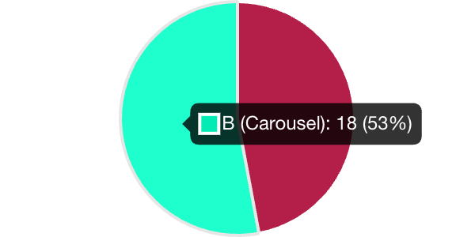
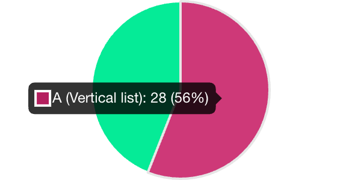

Student App
Initial UI Testing Completed
"UniLincoln" name agreed following poll with students
Development Team work to move off staging site
to permanent domain
Focus on delivering priority features for release to LIBS Semester C cohort (w/c 20 May)
Linked Google Analytics across student sites to inform relevant trending content by programme, level, international/home and college.
Trending content UI (A/B Testing)

Resources Desktop UI (A/B Testing)

Students intsalled PWA app to their phones
Completed a system usability study (Quantitative)
Students provided written or in person feedback (Qualitative)
Met Student Union, virtually and face to face rep hub meetings.
Focus groups in Graphic Design and Sports Science lectures.
Computer Science society.
LIBS Global Lounge Fun & Games session.
Stakeholder group student members & more.
Met with over 350 students
App currently has 339 users that have logged in 1707 times
Students from over 40 different courses
students completed system usability study
"LOVE the ability to submit your attendance within the app. I also like it that it says "free time" helps to clarify to students that you have no sessions currently".
"I would use this app on a daily basis and recommend it to my course mates"
"I really like the attendance recording feature and how it comes up on the timetabled session, and how it doesn't take you to a separate page"
"Think this is great and it’s much clearer and more engaging than the present gateway"
92% would like to use frequently.
91% thought it was easy to use.
89% felt very confident using it.
Providing access to LIBS Semester C intake at their welcome week w/c 20 May
Feature development including trending content and ability to ‘favourite’
Make decision on app stores
Confirm new features for delivery by end June 24
Comms & Engagement for start of AY24/25 launch
Co-ordinated messaging – sports centre app / service desk / shopfront
Keeping the "A" as we add more features
Questions?